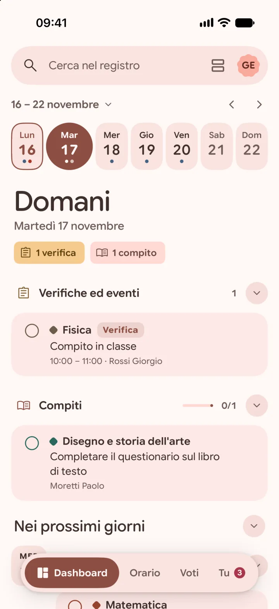
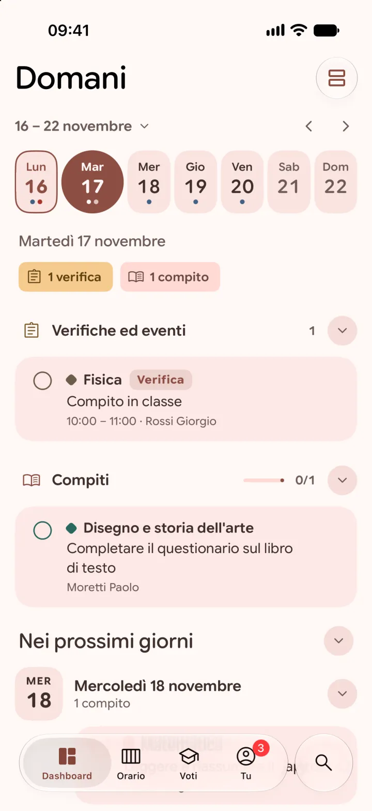

Dashboard
La giornata dopo, già pronta
BCW si apre sul giorno dopo, con compiti, verifiche ed eventi. Sotto, i prossimi giorni come un'agenda: segna i compiti come fatti e ricevi un promemoria la sera prima.
BCW è il registro elettronico Classeviva ridisegnato: voti, compiti, verifiche, orario e comunicazioni in un'app veloce, chiara e bella da usare, in stile Material 3 Expressive.

BCW ha tutte le funzioni dell'app ufficiale di Classeviva, più tanti extra pensati per chi a scuola ci va ogni giorno.
BCW si apre sul giorno dopo, con compiti, verifiche ed eventi. Sotto, i prossimi giorni come un'agenda: segna i compiti come fatti e ricevi un promemoria la sera prima.
Prova i voti che non hai ancora preso e scopri come cambiano le medie. Provalo qui:
Media generale e dei periodi, l'andamento nel tempo e l'effetto di ogni voto sulla media della materia. Scegli tu come calcolarla: media di tutti i voti o media delle medie, con o senza pesi.
BCW ricava una bozza dell'orario dalle lezioni registrate. Poi aggiungi note, file, foto e intervalli, sposti gli eventi trascinandoli e scegli i colori. Le verifiche segnate dai docenti compaiono da sole sulla lezione giusta.
Comunicazioni con adesione, firma e risposta, e gli allegati aperti al volo.
Compiti, voti, comunicazioni, materiale e note da un'unica barra.
Nuovi voti, comunicazioni, note, assenze e compiti, anche con l'app chiusa.
Comunicazioni e note da leggere e assenze da giustificare, in un posto solo.
Senza connessione vedi i dati dell'ultima volta che hai aperto l'app.
Blocca l'app con Face ID o Touch ID.
Più account e account genitore con più figli: passi dall'uno all'altro in un tocco.
Compiti, verifiche ed eventi anche nel Calendario di iOS.
Sulla schermata di blocco e nella Dynamic Island: la materia nel suo colore, l'aula, quanto manca e la lezione dopo.
Dieci temi o un colore a tua scelta, in chiaro o in scuro. Da un solo colore BCW genera l'intera palette, come Material 3, e anche l'icona dell'app lo segue. Provalo: questa pagina cambia con lui.
L'icona segue il tema.
Nell'app scegli tra il colore del tema e dieci colori, in chiaro, scuro, colorata o trasparente. Qui cambia anche quella della scheda del browser.


BCW nasce in Material 3 Expressive: barra di navigazione flottante, liste segmentate, forme e animazioni a molla. In Impostazioni › Aspetto puoi passare a Liquid Glass: barra di navigazione, schede e menu diventano quelli di iOS, in vetro.
Trascina il cursore sul telefono per confrontarli.
L'orario e i widget, per sempre
Tieni traccia delle materie della settimana con note, file, e intervalli. Scegli i tuoi colori con le palette personalizzate, e lascia che BCW inserisca i dati in automatico.
Tieni traccia della lezione in corso direttamente dalla Dynamic Island o dalla schermata di blocco.
Consulta il tuo orario, le prossime verifiche o i tuoi voti a colpo d'occhio direttamente dalla schermata home.
L'orario si sincronizza con il tuo account BCW, insieme agli allegati, su tutti i tuoi dispositivi.
Tutto il resto di BCW resta gratuito: voti, agenda, bacheca, assenze, note e le altre funzioni. Il tuo acquisto sostiene lo sviluppo di BCW, un progetto indipendente e open source.
Con un account BCW ritrovi account Classeviva, impostazioni e orario su ogni dispositivo. È facoltativo: BCW funziona benissimo anche senza.
Abbina fino a dieci account Classeviva (il tuo, quelli di fratelli e sorelle o i profili di un genitore) ed entra in tutti con il tuo account BCW, su qualsiasi dispositivo.
Tema, colori e preferenze ti seguono da iPhone a iPad, fino al web.
L'orario di ogni account abbinato si sincronizza con gli allegati. Se lo modifichi da due dispositivi insieme, BCW unisce le modifiche.
Sul server le password di Classeviva sono cifrate con AES-256-GCM e quella dell'account BCW è salvata solo come hash. Cambiandola esci da tutti gli altri dispositivi.
Chi entra con un account Classeviva vede a quali account BCW è abbinato e può scollegarlo senza conoscerne la password. Scollegando un account o eliminando quello BCW si cancellano anche i dati sul server.
BCW è un progetto indipendente e open source, senza pubblicità. Le tue credenziali vanno solo dove servono.
Il codice di tutte le versioni è su GitHub con licenza MIT: puoi leggerlo, compilarlo da te e contribuire.
Vedi il codiceNome utente e password restano nel Portachiavi del dispositivo e vanno solo ai server di Classeviva, con le stesse API dell'app ufficiale.
Abbina uno o più account Classeviva ed entra in tutti con un solo accesso, anche sul web. Impostazioni, aspetto e orario si sincronizzano; le credenziali sul server sono cifrate.
Come funzionaNessun banner e nessun abbonamento. BCW+ è un acquisto unico che sostiene lo sviluppo di un progetto indipendente.
Su iPhone e iPad, nel browser e su Android: stessi colori, stesse funzioni e, con l'account BCW, gli stessi dati.
La versione principale, nativa in Swift: widget, attività in diretta, Liquid Glass e un layout dedicato all'iPad.
In arrivo su App Store iOS e iPadOS 26 o successiviNel browser, senza installare nulla: stesse funzioni e stesso design, sul computer e sul telefono. Si installa anche come app.
Disponibile Safari, Chrome, Edge o Firefox recentiNativa in Kotlin e Jetpack Compose, in Material 3 Expressive, con i Live Updates di Android 16 per la lezione in corso.
Disponibile Android 8.0 o successivoUn Cloudflare Worker con un database D1, che puoi pubblicare anche sul tuo account: basta il piano gratuito.
Le risposte veloci. Per installazione, problemi di accesso, notifiche e tutto il resto c'è la pagina di supporto.
Vai al supportoSì. Voti, compiti, agenda, bacheca, assenze, note e tutte le altre funzioni sono gratis e senza pubblicità. Nella versione dell'App Store orario, widget e attività in diretta si sbloccano con BCW+, un acquisto unico da 2,99 €; la build su GitHub ha già tutto sbloccato.
No: BCW è un client non ufficiale e non è affiliata a Gruppo Spaggiari Parma S.p.A. Usa le stesse API dell'app ufficiale, quindi vedi gli stessi dati del tuo registro, con un'altra interfaccia e molte funzioni in più.
Senza account BCW sono salvate nel Portachiavi del dispositivo e inviate solo ai server di Classeviva. Se usi un account BCW per sincronizzare più dispositivi, le credenziali degli account abbinati sono salvate sul server di BCW, cifrate con AES-256-GCM.
Sì: BCW supporta gli account genitore con più figli. Puoi anche aggiungere più account e passare dall'uno all'altro dall'avatar in Dashboard o tenendo premuta la scheda Tu.
BCW 4.0 è in fase di approvazione e arriverà molto presto. Nel frattempo puoi installare l'IPA con AltStore o compilarla con Xcode: trovi i passaggi nel supporto.
Sì: nella schermata di accesso tocca Prova la demo e BCW si riempie di dati di esempio. Funziona anche nella versione web, senza installare nulla.